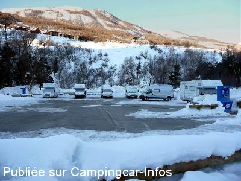
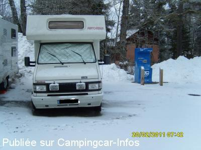
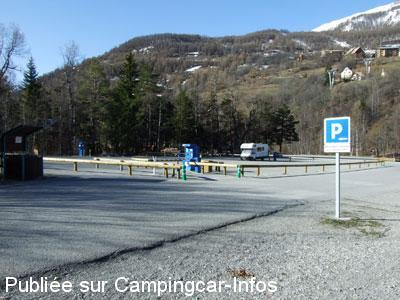
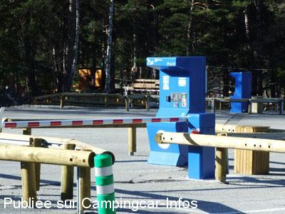

ASN = Aire de services avec stationnement nuit possible de :
ALLOS
(N° 787)
Accès/adresse :
Haut de Ville
04260 ALLOS
04260 ALLOS
Latitude : (Nord) 44.24311° Décimaux ou 44° 14′ 35′′
Longitude : (Est) 6.62322° Décimaux ou 6° 37′ 23′′
Tarif : 2015
Emplacement gratuit
Services : 2 €
Électricité : 2 €/4 h
Type de borne : FLOT BLEU
Services :


Autres informations :
Ouverte toute l'année
Stationnement limité 72 h
8 prises électriques de 600 W

Le 05/11/2015 par Franck Dichamp

Le 29/05/2011 par jempalo

Le 17/04/2008 par charscot

Le 17/04/2008 par charscot
de
maxime83
le 17/02/2015 :
§ nouveauté ,le sationnement est maintenant gratuit par contre les services sont payants par piéces de 2 euros exclusivement:
2 E pour vidande et eau
2 E pour 4 heures d'electicité 600w seulement (toujours que 8 prises !)
§ nouveauté ,le sationnement est maintenant gratuit par contre les services sont payants par piéces de 2 euros exclusivement:
2 E pour vidande et eau
2 E pour 4 heures d'electicité 600w seulement (toujours que 8 prises !)
de
Leo
le 04/08/2013 :
Après une escapade périlleuse dans la montagne (sensations fortes garanties : routes étroites à peine la place de passer dans les deux sens au bord d'un précipice sur plus de 20km en venant de barcelonnette) pour atteindre une aire bondée, les camping-car les uns à coté des autres parqués sur un petit espace alors qu'à côté il y a un immense parking pour la base de loisir... Après, hors saison, il y a peut-être moins de monde...
Après une escapade périlleuse dans la montagne (sensations fortes garanties : routes étroites à peine la place de passer dans les deux sens au bord d'un précipice sur plus de 20km en venant de barcelonnette) pour atteindre une aire bondée, les camping-car les uns à coté des autres parqués sur un petit espace alors qu'à côté il y a un immense parking pour la base de loisir... Après, hors saison, il y a peut-être moins de monde...
de
szymczak
le 17/07/2011 :
§
nous revenons de cette aire toujours super , tres calme , juste une petite augmentation ( pour l'été ? )
mais 6€ les pemieres 24 h et 5€ la suite , pas vu de restriction de durée
vraiment une superbe aire proche de tous
§
nous revenons de cette aire toujours super , tres calme , juste une petite augmentation ( pour l'été ? )
mais 6€ les pemieres 24 h et 5€ la suite , pas vu de restriction de durée
vraiment une superbe aire proche de tous
de
jempalo
le 29/05/2011 :
§
Nous sommes allés une semaine à Allos en camping-car en février 2011. Nous avons été agréablement surpris par l'aménagement de cette aire (eau, électricité disponible 2 heures, à réarmée, vidange pratique), et peu onéreuse (5€ le 1er jour puis tarifs dégressifs à 4€ les jours suivants). Cadre panoramique et emplacements proche des télécabines (accés village et station).
§
Nous sommes allés une semaine à Allos en camping-car en février 2011. Nous avons été agréablement surpris par l'aménagement de cette aire (eau, électricité disponible 2 heures, à réarmée, vidange pratique), et peu onéreuse (5€ le 1er jour puis tarifs dégressifs à 4€ les jours suivants). Cadre panoramique et emplacements proche des télécabines (accés village et station).
de
Cool31
le 27/08/2009 :
De passage début août. L'aire est très bien entretenue. Lorsque nous avons voulu nous brancher, la prise avait disjoncté. Suite à notre appel téléphonique, un policier municipal est intervenu dans la minute qui suivait !! Bravo pour l'efficacité !
Nous voulions profiter de la base nautique mais malheureusement la météo ne fut pas clémente. Nous n'y sommes restés qu'une nuit.
De passage début août. L'aire est très bien entretenue. Lorsque nous avons voulu nous brancher, la prise avait disjoncté. Suite à notre appel téléphonique, un policier municipal est intervenu dans la minute qui suivait !! Bravo pour l'efficacité !
Nous voulions profiter de la base nautique mais malheureusement la météo ne fut pas clémente. Nous n'y sommes restés qu'une nuit.
de
richard
le 06/03/2009 :
Emplacement bien situé et agréable mais pas assez de prises pour tous car il n'y en a que cinq et impossible de se brancher à plus de deux CC car max de 600w sinon ça disjoncte. La grille de vidange n'est pas protégée alors souvent bouchée par la neige et manoeuvre difficile quand c'est complet. J'espère que des travaux d'amélioration seront apportés.
Emplacement bien situé et agréable mais pas assez de prises pour tous car il n'y en a que cinq et impossible de se brancher à plus de deux CC car max de 600w sinon ça disjoncte. La grille de vidange n'est pas protégée alors souvent bouchée par la neige et manoeuvre difficile quand c'est complet. J'espère que des travaux d'amélioration seront apportés.
de
charscot
le 17/04/2008 :
Aire très fonctionnelle (eau / vidange / électricité 2 heures par cycle), bien plaçée (base de loisirs), à 5 minutes du village, à 3 minutes des télécabines, navette gratuite pour Val d'Allos 1500 et Station 1800. Et, pour clôturer, accueil très sympathique du responsable de la police municipale ainsi que des commerçants du village. A recommander !
Aire très fonctionnelle (eau / vidange / électricité 2 heures par cycle), bien plaçée (base de loisirs), à 5 minutes du village, à 3 minutes des télécabines, navette gratuite pour Val d'Allos 1500 et Station 1800. Et, pour clôturer, accueil très sympathique du responsable de la police municipale ainsi que des commerçants du village. A recommander !
de
Jean Marc LANFUMEY
le 30/12/2007 :
Bonjour à tous. Je reviens d'un petit séjour de ski sur l'aire de stationnement de la Foux d'Allos, que je fréquentais depuis 2 ans. Pour ceux qui connaissent, il fallait jusqu'alors aller à une petite centaine de mètres pour effectuer son escale technique près du départ des télécabines. Eh bien c'est fini ou presque.
En effet, la municipalité a amélioré ceci en installant deux caisses automates avec carte bancaire (entrée et sortie) aux tarifs suivants: 7€ le premier jour, puis 4€ les suivants. L'aire dispose donc à présent d'une borne Flot Bleu en libre service. De plus, deux plots électriques de 4 prises chacune sont disposés coté haut et coté bas de l'aire. La borne de vidanges en possède également une, de même que les deux caisses de paiement. Je précise que ces prises ne sont équipées que de 600w pour la recharge uniquement des batteries, et ce pour un cycle de deux heures.
Seul bémol: je n'en ai pas bénéficié pour mon séjour car le raccordement au réseau électrique n'est pas encore réalisé, mais il le sera sans aucun doute pour les vacances de février. Bonne saison de ski à tous.
Bonjour à tous. Je reviens d'un petit séjour de ski sur l'aire de stationnement de la Foux d'Allos, que je fréquentais depuis 2 ans. Pour ceux qui connaissent, il fallait jusqu'alors aller à une petite centaine de mètres pour effectuer son escale technique près du départ des télécabines. Eh bien c'est fini ou presque.
En effet, la municipalité a amélioré ceci en installant deux caisses automates avec carte bancaire (entrée et sortie) aux tarifs suivants: 7€ le premier jour, puis 4€ les suivants. L'aire dispose donc à présent d'une borne Flot Bleu en libre service. De plus, deux plots électriques de 4 prises chacune sont disposés coté haut et coté bas de l'aire. La borne de vidanges en possède également une, de même que les deux caisses de paiement. Je précise que ces prises ne sont équipées que de 600w pour la recharge uniquement des batteries, et ce pour un cycle de deux heures.
Seul bémol: je n'en ai pas bénéficié pour mon séjour car le raccordement au réseau électrique n'est pas encore réalisé, mais il le sera sans aucun doute pour les vacances de février. Bonne saison de ski à tous.